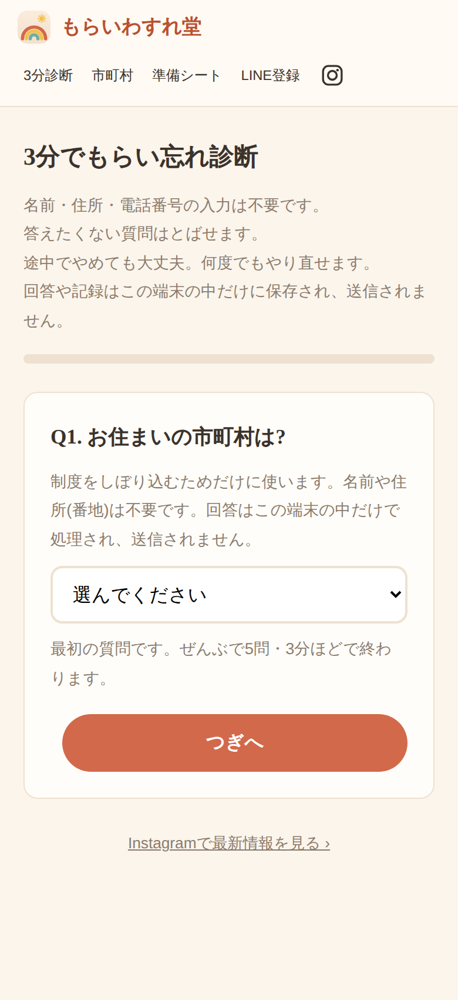
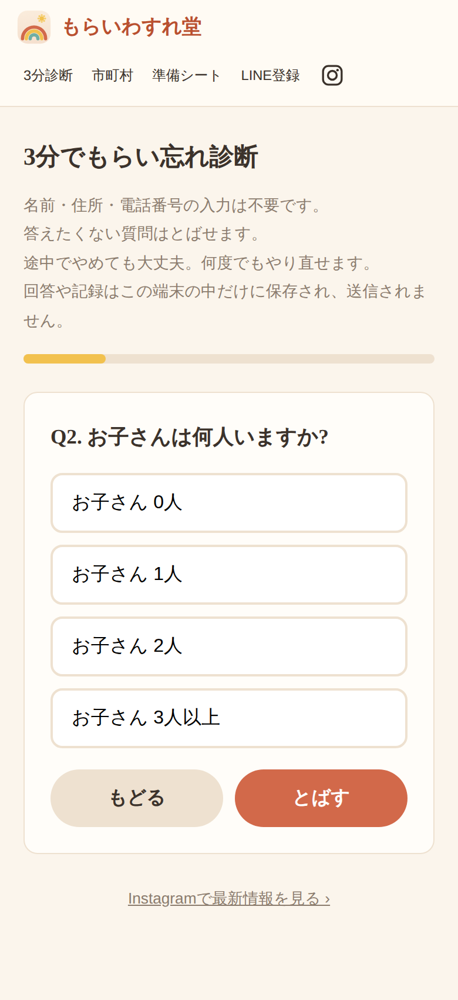
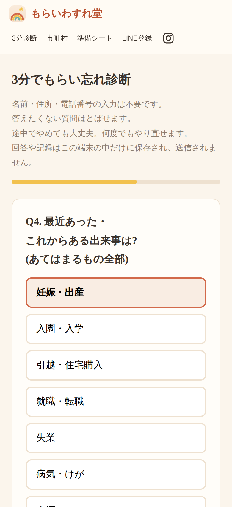
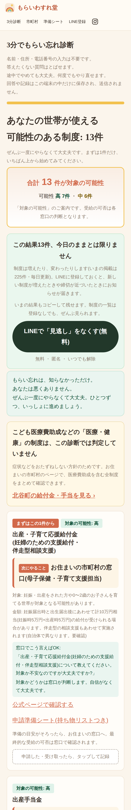
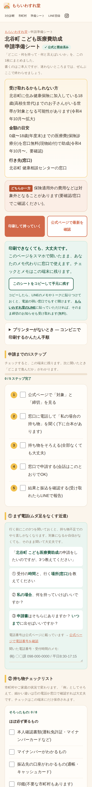

調べて、えらんで、
準備するまで。
— もらいわすれ堂の使い方 —



質問に答えるだけ。あなたの世帯の
“もらい忘れ”候補がわかるかもしれません
無料 ・ 匿名 ・ 登録不要

確認できた制度だけを、掲載しています
断定はしません。最後はかならず原文へ

✓ ✓ ✓ ✓ ✓窓口に行く前の準備が、1枚のシートに
やることは、この5つだけ
① まず電話。
聞くことは、台本のとおりでOK
② 持ち物も、リストでチェック
締切の約1か月前から、
お知らせします
新しい制度が増えました
制度は、増えたり変わったりします
LINEに登録しておくと、新しい制度や、
締切が近づいた制度をお知らせできます
締切の約1か月前から。
準備の時間が、ちゃんと残ります
「受け取れました」のこえ
受け取れたら、
ひと言おしえてください
その報告が、“ほんとうに受け取れた”
という実例になります
つぎに調べる誰かが、
安心して申請できるように
ゆいまーる —
あなたのひと言が、みんなのささえに
1しらべる
2えらぶ
3じゅんびする
4みまもる
とどけ、沖縄のみらいへ。
もらいわすれ堂
あなたが受け取るまで、いっしょに。